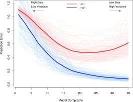
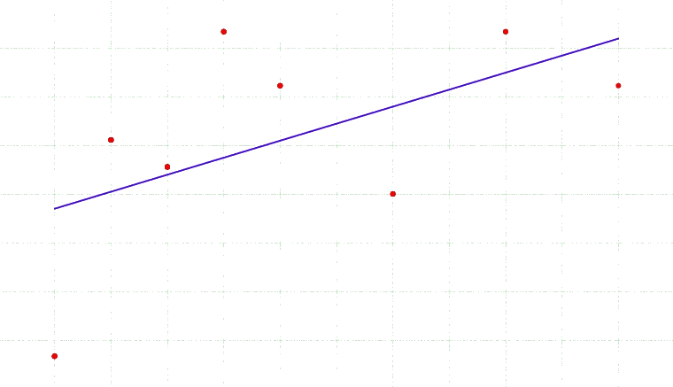
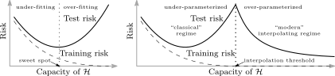

Advanced Machine Learning
20: Model Comparison I
Outline for the lecture
- Bias-Variance Trade-off Revisited
- No Free Lunch Theorem
- Problems with Accuracy
- Confusion Matrix
Bias-variance trade off revisited
bandwidth selection for kde
- Pick $h$ that minimizes the error between the estimated density and the true density
- Let us use MSE for measuring this error
- $E\left[ (\prob{P$_{KDE}$}{\vec{x}} - \prob{P}{\vec{x}})^2 \right] $
- $ = E\left[ \prob{P$_{KDE}$}{\vec{x}}^2 - 2 \prob{P$_{KDE}$}{\vec{x}} \prob{P}{\vec{x}} + \prob{P}{\vec{x}}^2\right]$
- $ = E\left[ \prob{P$_{KDE}$}{\vec{x}}^2\right] - 2 E\left[\prob{P$_{KDE}$}{\vec{x}}\right] \prob{P}{\vec{x}} + \prob{P}{\vec{x}}^2$
- Add and subtract $E^2\left[ \prob{P$_{KDE}$}{\vec{x}} \right]$
- \begin{align} = & E^2\left[ \prob{P$_{KDE}$}{\vec{x}} \right] - 2 E\left[\prob{P$_{KDE}$}{\vec{x}}\right] \prob{P}{\vec{x}} + \prob{P}{\vec{x}}^2 \\ & + E\left[ \prob{P$_{KDE}$}{\vec{x}}^2\right] - E^2\left[ \prob{P$_{KDE}$}{\vec{x}} \right] \end{align}
- \begin{align} = & (E\left[ \prob{P$_{KDE}$}{\vec{x}} \right] - \prob{P}{\vec{x}})^2 + E\left[ \prob{P$_{KDE}$}{\vec{x}}^2\right] - E^2\left[ \prob{P$_{KDE}$}{\vec{x}} \right] \end{align}
- This is an example of bias-variance tradeoff
Bias-variance tradeoff

Bias-Variance Decomposition for MSE
- MSE as an error measure
- $E\left[ (\hat{\theta} - \theta)^2 \right] $
- $ = E\left[ \hat{\theta}^2 - 2 \hat{\theta}\theta + \theta^2\right]$
- $ = E\left[ \hat{\theta}^2\right] - 2 E\left[\hat{\theta}\right] \theta + \theta^2$
- Add and subtract $E\left[ \hat{\theta} \right]^2$
- \begin{align} = & E\left[ \hat{\theta} \right]^2 - 2 E\left[\hat{\theta}\right] \theta + \theta^2 \\ & + E\left[ \hat{\theta}^2\right] - E\left[ \hat{\theta} \right]^2 \end{align}
- \begin{align} = & (E\left[ \hat{\theta} \right] - \theta)^2 + E\left[ \hat{\theta}^2\right] - E\left[ \hat{\theta} \right]^2 \end{align}
- Is not variance $E\left[ (\hat{\theta} - E\left[\hat{\theta}\right])^2\right]$?
- $E\left[ (\hat{\theta} - E\left[\hat{\theta}\right])^2\right]$
- $= E\left[ \hat{\theta}^2 - 2\hat{\theta}E\left[\hat{\theta}\right] + E\left[\hat{\theta}\right]^2 \right]$
- $= E\left[ \hat{\theta}^2 \right] - 2 E\left[ \hat{\theta}\right]E\left[\hat{\theta}\right] + E\left[\hat{\theta}\right]^2$
- $= E\left[ \hat{\theta}^2 \right] - 2 E\left[\hat{\theta}\right]^2 + E\left[\hat{\theta}\right]^2$
- $= E\left[ \hat{\theta}^2 \right] - E\left[\hat{\theta}\right]^2$
if data is all we have
how do we know if we're doing well?
how do we know which model is better?
Bias-variance tradeoff


Bias-variance tradeoff

Select a model that generalizes best
$E\left[ (g(\theta; {\cal D}) - G(\theta))^2 \right] = \mbox{bias of }g + \mbox{ variance of }g$,
where $g$ is estimated and $G$ is true generalization error
Bias-variance tradeoff

Double-descent curve
No free lunch theorem
"Even after the observation of the frequent conjunction of objects, we have no reason to draw any inference concerning any object beyond those of which we have had experience."
David Hume, in A Treatise of Human Nature, Book I, part 3, Section 12.
No free lunch theorem (simply put)
There is not a universally good algorithms that's best on all possible test data!